Lean Tutorial
Lean Beginnings
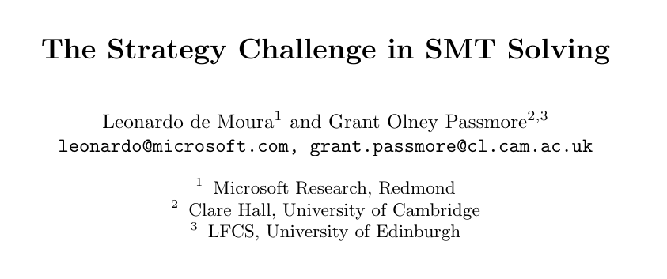
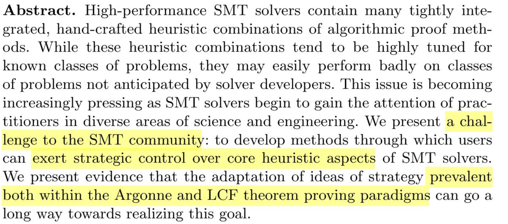
Lean
Created as a platform for white-box automation by Leonardo de Moura
An interactive theorem prover and a functional programming language
Features a lean kernel: a minimised type theory compared to similar systems
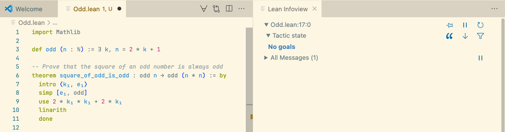
The Lean System
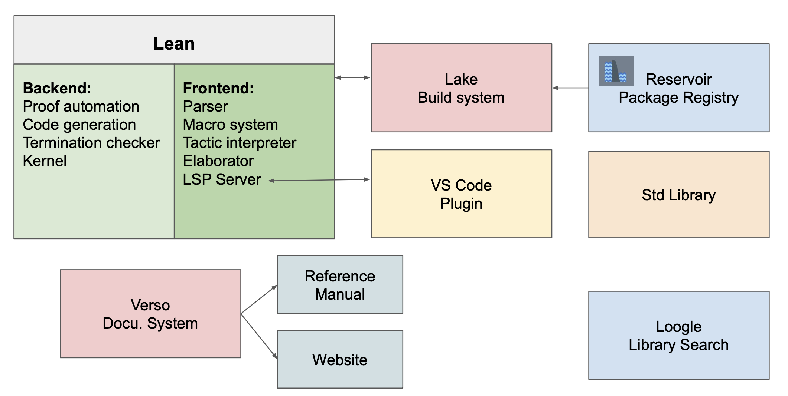
The Liquid Tensor Experiment — 2021
Peter Scholze (Fields Medal 2018) was unsure about one of his latest results in Analytic Geometry.
The Lean community not only verified the proof within months but also simplified it. They did this without fully understanding the entire proof.
Followed by many similar projects since.
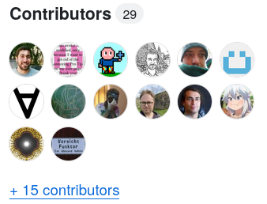
Software Verification in Lean 4
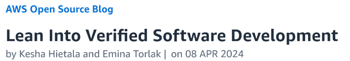
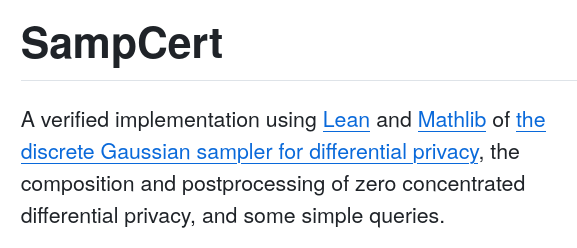
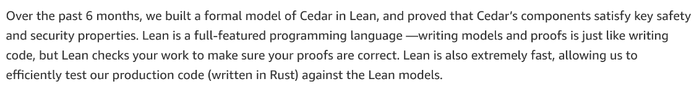
Veil Verification Framework (NUS)
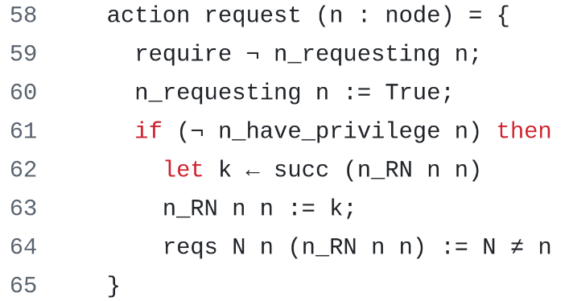
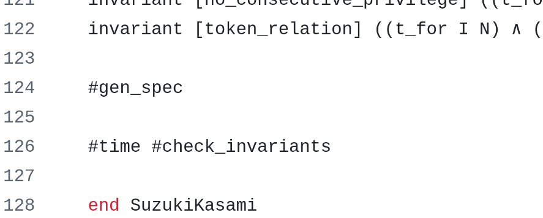
AI with Lean
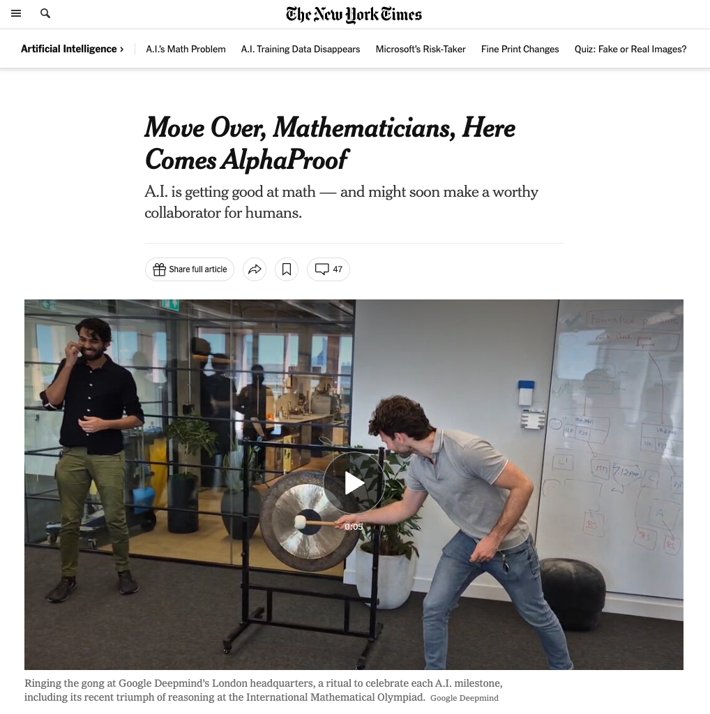
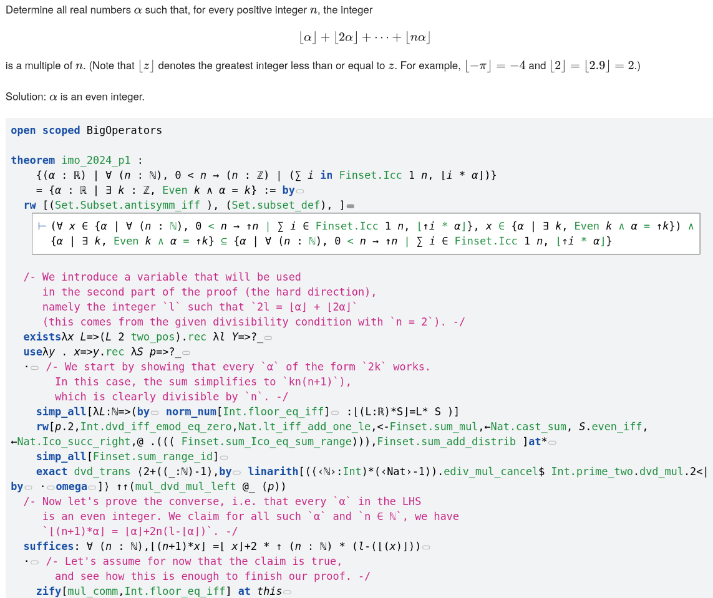
The Lean Focused Research Organization (FRO)
A non-profit organisation dedicated to the development of Lean.
Missions:
-
Address scalability, usability, and proof automation in Lean
-
Support formal mathematics
-
Achieve self-sustainability in 5 years
Supported by Simons Foundation International, Alfred P. Sloan Foundation, Merkin Family Foundation, Alex Gerko, and Convergent Research.
Agenda: verification of foreign programs in Lean
-
Embedding languages in Lean
-
Operational semantics of an imperative language
-
Proving correctness of programs and optimizations
-
Combining tools: calling SAT solvers from Lean
Imp: An Imperative Language
Statements: while loops, conditionals, assignment.
Mutable memory; flat mapping from names to 32-bit values (no local scope).
def fact : Stmt := imp {
out := 1;
while (n > 0) {
out := out * n;
n := n - 1;
}
}
def swap : Stmt := imp {
temp := x;
x := y;
y := temp;
}
def min : Stmt := imp {
if (x < y) {
min := x;
} else {
min := y;
}
}
Next steps…
-
Books:
-
Get help on the Lean Zulip: leanprover.zulipchat.com
-
Have fun!